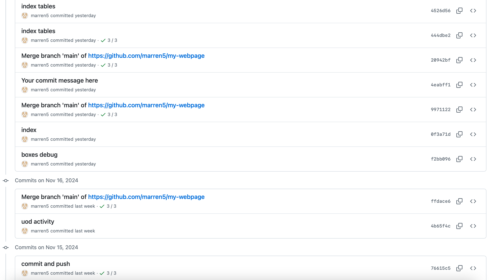
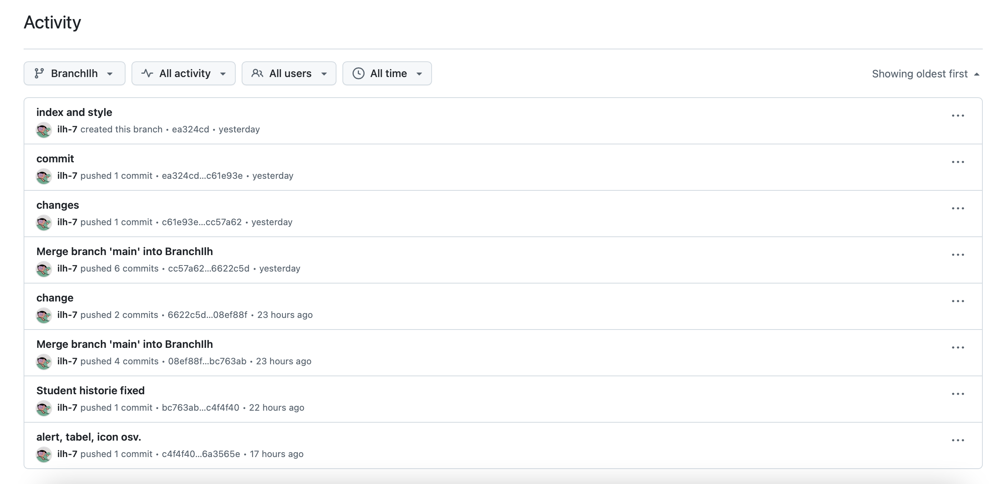
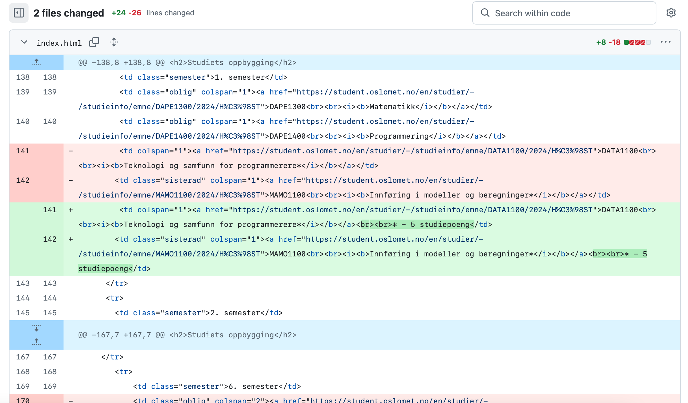
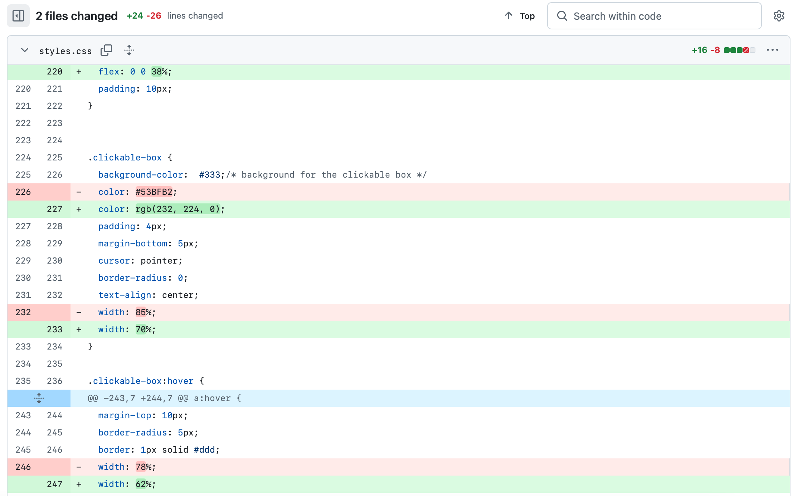

What is GitHub?
GitHub is a platform that allows to host repositories and makes collaboration among code developers possible and rather convenient.
Users of git can collaborate on code development by pushing, tracking and editing changes while working together in a project. One of the goals of git is to make collaboration efficient.
GitHub presumably is essentially useful for big projects where a team of developers involved.
Benefits of Collaboration
List of the benefits includes work efficiency and possibly productivity of developers (groups).
System of branches, tracking and editing changes before megring into the main branch, etc. all together makes
the work in team possible and less frustrating, since each member can work on its own version of the code.
Possibility to preview incoming changes, comparison of old and new versions (before arpproving merge request) makes collaboration less chaotic.
GitHub also provides a clear history of implemented changes. This helps to learn from earlier decisions and save time on troubleshooting.
How to Collaborate Effectively
It is a good practice to discuss and clarify coding standards and a workflow in the group before beginnig to
colaborate on git. Especially, split responsibilities on reviewing and merging changes. In addition, possibility to write a comment on introduced changes prior push is a key for effective and positive collaboration.
Group challenges When Using GitHub in frames of this course
All group members had no previous knowledge on functionality of git and vs code.
Due to this fact it was uneasy to avoid conflicts while merging changes from multiple contributors. This way, several challenges were faced:
- Dealing with uncommitted changes that caused errors during merges.
- Accidentally pushing to the wrong branch or overwriting changes.
- Struggling to integrate changes from other group members into the local environment.
- Challenges with understanding or using git commands correctly.
- Miscommunication among group members about tasks or changes.
However, mentioned above challenges taught us the importance of properly committing,
stashing and pushing local changes (into correct branch as well) and keeping clear communication with
group members in order to optimise the work.
Commits history changes on GitHub

An example of a Commits history # 1.

An example of a Commits history # 2.
Specific cahnges history on GitHub

An example of a specific change in a Commit # 1.

An example of a specific change in a Commit # 2.